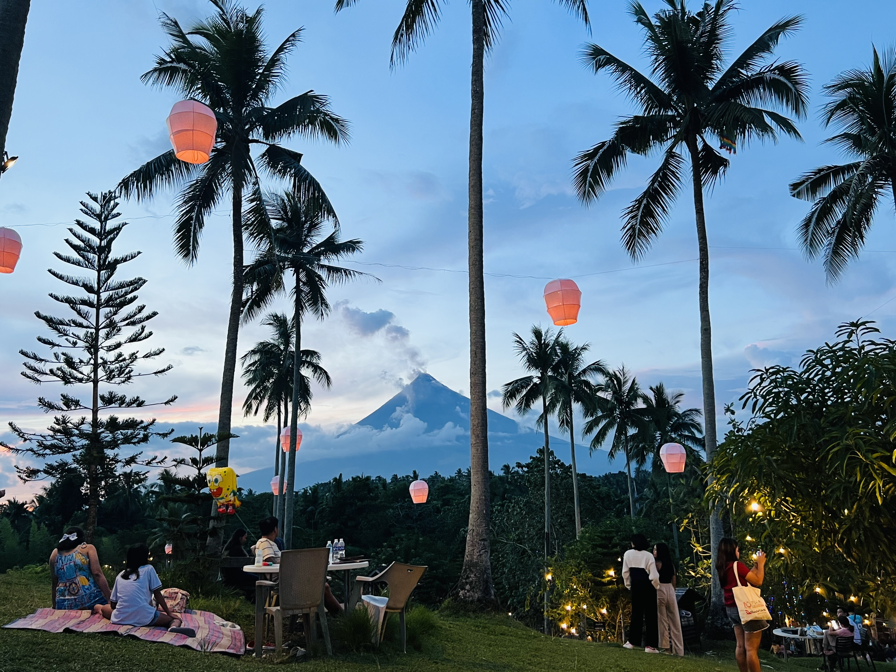
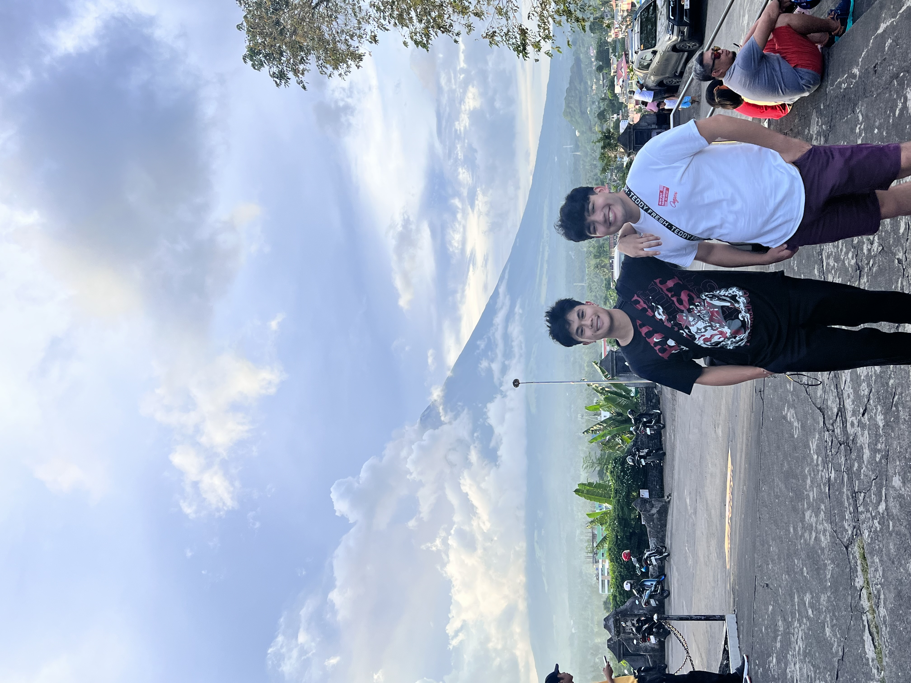
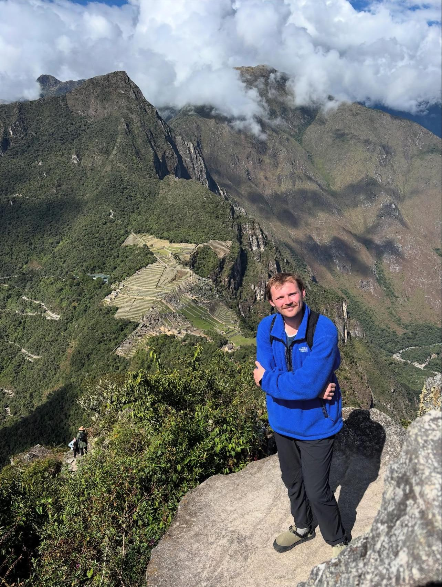
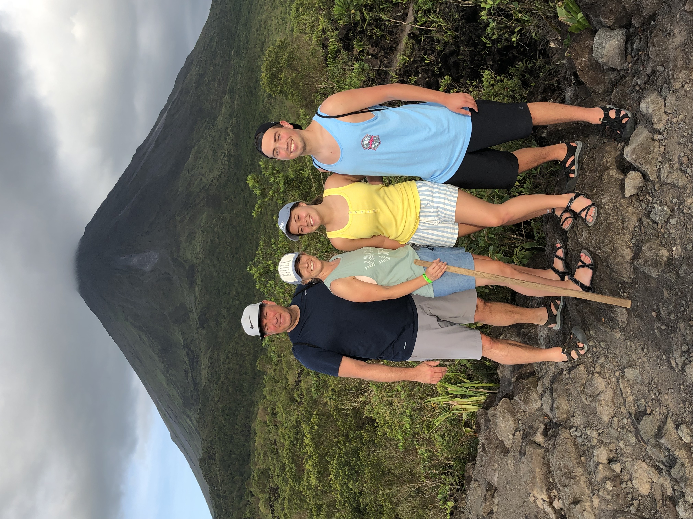
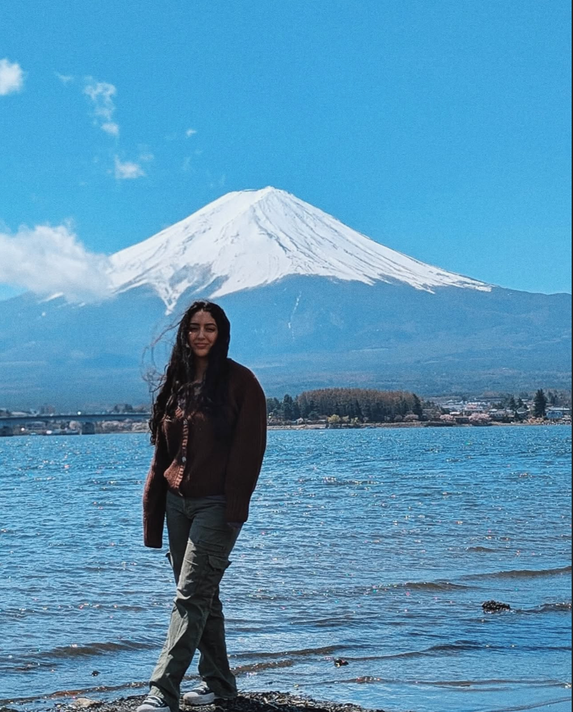

Global Travel

Introduction
195 countries, one click away! This page is your gateway to the world — a collection of global highlights, personal photos, and useful info designed to spark your next adventure beyond the U.S.
Overview
Dive into a collection of travel highlights, seasonal insights, and curated picks from both myself and close friends. Whether you're planning your next trip or reminiscing about your own, this page blends inspiration with practical travel info to guide your adventure.
Travel Showcase

Singapore, Asia
The city of the future, today! With diversity like you have never seen, to wonderful night life experiences the city offers FREE of charge! Check out Marina Bay Sands, and the Marina Gardens!

Legazpi, Philippines
The Filipino city of Legazpi is nothing short of an amazing experience for those who may be experienced but still want something in the city, with one of the biggest active volcanoes in Asia!
Friends Picks!

Machu Picchu, Peru "Walking to Machu Picchu was one of the most amazing experiences of my life, being able to see an ancient city, only discovered in the last 130 years. I really felt like I knew at that moment what it means to see a wonder of the world!"
- Blake Christopherson

La Fortuna, Costa Rica "Costa Rica is one of those places you cannot believe is close to home, but far enough to have such a distinct and unique culture. I would not have thought that I would have been treated so well at a place, it was very welcoming."
- Jacob Shaffer

Mount Fuji, Japan "Japan was my first time going outside of the country in my life, and the cultural experience was something I will never be able to replicate for recieving that stimulation for the first time! From the food to sightseeing and the sheer size of the cities such as Tokyo, this really felt like I was living life to the fullest!"
- Ariana Stalians

Siargao, Philippines "Siargao was a nice breath of fresh air from having lived in Manila for university. I would consider it the Hawaii of the Philippines, but with a cultural twist!"
- Christian Vertera
Hot Spots
| Destination | Best Month | Avg Temp (°F) | Worst Month | Avg Temp (°F) |
|---|---|---|---|---|
| Paris, France | May | 64 | January | 41 |
| Tokyo, Japan | April | 63 | August | 86 |
| New York, USA | October | 61 | January | 36 |
| Rome, Italy | May | 70 | August | 85 |
| Barcelona, Spain | June | 75 | August | 85 |
| Bangkok, Thailand | December | 79 | April | 90 |
| Cape Town, South Africa | February | 73 | June | 55 |
| London, UK | June | 66 | January | 41 |
| Bali, Indonesia | May | 82 | January | 81 |
| Istanbul, Turkey | September | 74 | January | 43 |
| Dubai, UAE | November | 77 | July | 105 |
| Prague, Czech Republic | May | 62 | January | 30 |
| Sydney, Australia | March | 73 | July | 55 |
| Rio de Janeiro, Brazil | September | 75 | January | 85 |
| Amsterdam, Netherlands | June | 68 | January | 37 |
| Lisbon, Portugal | May | 72 | January | 52 |
| Vancouver, Canada | July | 71 | December | 38 |
| Athens, Greece | May | 76 | August | 92 |
| Vienna, Austria | June | 71 | January | 34 |
| Seoul, South Korea | October | 61 | August | 84 |
Budget Friendly
| Destination | Avg Daily Cost (USD) | What You Can Do |
|---|---|---|
| Hanoi, Vietnam | $45 | Street food, museum tours, 3-star hotels |
| Chiang Mai, Thailand | $50 | Markets, temples, scooter rentals |
| Kathmandu, Nepal | $40 | Trekking, hostels, local eats |
| La Paz, Bolivia | $55 | Cable cars, cheap eats, day trips |
| Goa, India | $60 | Beaches, cafes, guesthouses |
| Sofia, Bulgaria | $50 | Old town tours, bakeries, B&Bs |
| Bucharest, Romania | $55 | Museums, cafes, budget hotels |
| Mexico City, Mexico | $65 | Markets, hostels, museums |
| Lisbon, Portugal | $70 | Streetcars, bakeries, scenic walks |
| Manila, Philippines | $50 | Local eats, jeepneys, hostels |
| Krakow, Poland | $60 | Historic sites, pierogi, hostels |
| Belgrade, Serbia | $55 | Nightlife, cafes, local eateries |
| Medellín, Colombia | $65 | Metro, parks, cheap eats |
| Cusco, Peru | $60 | Historic walking tours, markets |
| Marrakech, Morocco | $55 | Souks, riads, tagine meals |
| Lviv, Ukraine | $45 | Coffee shops, street food, hostels |
| Antalya, Turkey | $50 | Beaches, ruins, local food |
| Phnom Penh, Cambodia | $40 | Temples, markets, budget inns |
| Tbilisi, Georgia | $50 | Wine tasting, history walks, B&Bs |
| Pokhara, Nepal | $45 | Lakeside strolls, budget resorts |